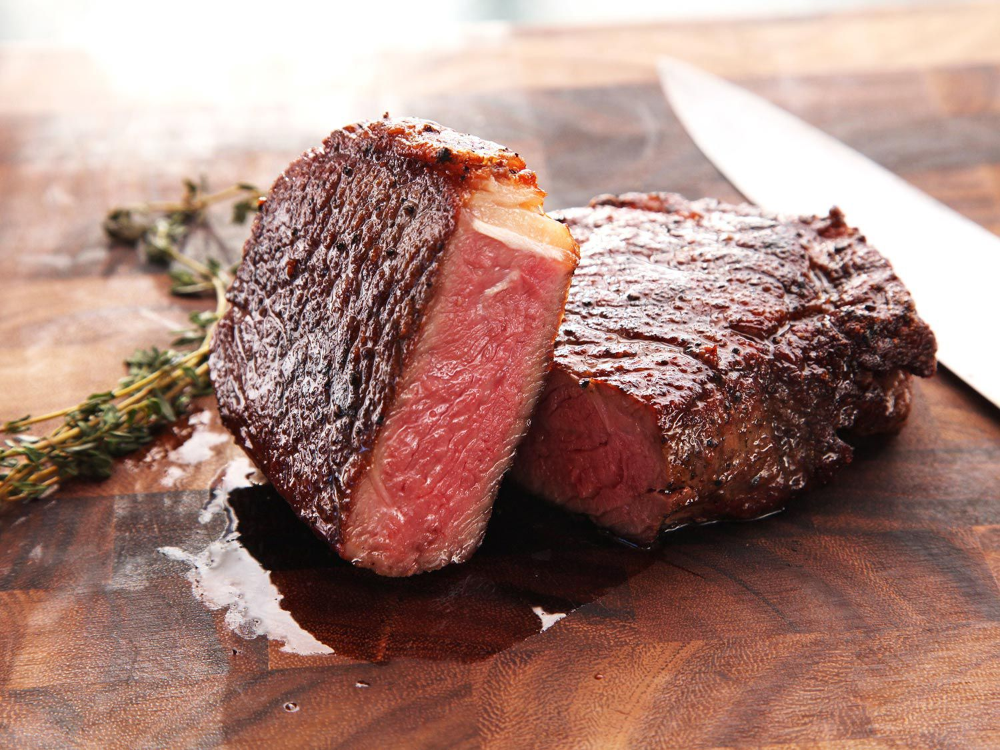

A good juicy steak to make for you and you only !
Here is the list of ingredients and steps to make this tasty steak.
Ingredients
- Steak
- Butter
- Salt
- Rosemary
- Put butter in a hot pan
- Put the steak in the hot pan and add salt
- Once it's cooked, put Rosemary on it and serve it
Return to the main page